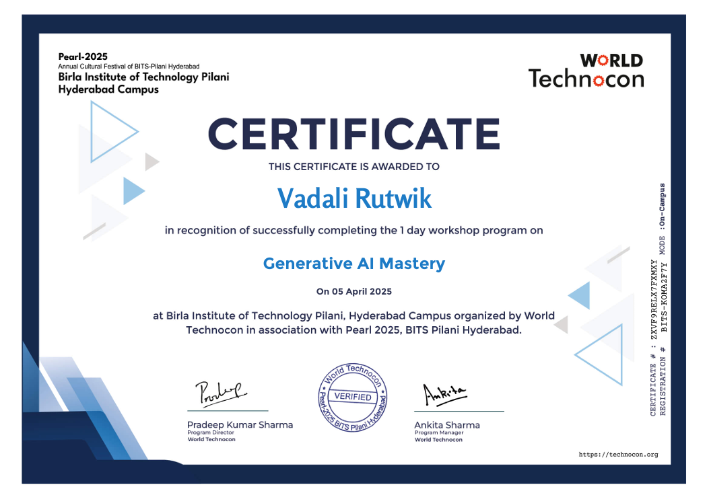

All Certifications



Each certification represents structured coursework and evaluation in relevant technical domains.
Initializing Intelligent Systems...
I architect and engineer scalable Artificial Intelligence platforms and backend infrastructures designed for structured deployment, operational resilience and long-term architectural sustainability.
My work focuses on modular backend orchestration, layered validation systems, structured API integration and automation-driven execution pipelines that bridge user interaction layers with intelligent reasoning engines.
I prioritize architectural clarity, separation of concerns and controlled abstraction boundaries to ensure that every system I build remains extensible, maintainable and production-ready.
Rather than building isolated features, I design execution ecosystems — where generation logic, routing control, validation frameworks and communication systems operate as structured, interconnected components.
My engineering philosophy emphasizes reliability, scalability and disciplined architectural modeling over superficial complexity.
AI Automation Platform Designed & Deployed
Recognized Technical Certifications
Languages (Hindi • English • Telugu)
Full Stack & Backend Architecture Capability
I am an Artificial Intelligence–oriented backend systems engineer driven by structured reasoning, disciplined architecture design and automation-first engineering methodology.
My design philosophy revolves around clear separation between presentation layers, execution engines, routing mechanisms and communication pipelines.
I engineer systems that integrate language model APIs, backend orchestration logic, structured validation layers, document rendering frameworks and automated dispatch mechanisms.
Each platform I develop follows a layered architectural model: input validation → contextual processing → structured execution → output formatting → communication dispatch.
This structured pipeline ensures maintainability, predictable behavior and scalability.
I believe in disciplined abstraction — where every module has a single responsibility and communicates through controlled interfaces.
My backend systems are engineered to adapt to evolving dependencies, third-party APIs and scaling demands without requiring architectural redesign.
I maintain strong foundations in data structures, algorithmic reasoning and computational efficiency, allowing me to design execution layers that are both logically sound and performance-aware.
Beyond backend systems, I design structured web platforms that maintain UI clarity while seamlessly integrating with backend execution logic.
Fluent in Hindi, English and Telugu. Open to AI, Backend and Intelligent System Engineering roles.
Designed and deployed a production-oriented automation platform integrating AI generation, routing engines, validation layers, PDF rendering and SMS dispatch.
Implemented structured fallback handling and modular architecture allowing new automation modules to integrate seamlessly.
Established separation between execution logic, formatting layers and dispatch mechanisms to ensure maintainability.
Engineered scalable backend services managing third-party API interactions and structured response parsing.
Designed resilient integration layers adaptable to evolving external dependencies.
Developed validation frameworks ensuring reliable execution under asynchronous conditions.
Built responsive web systems integrated with backend execution pipelines.
Developed a fashion jewellery platform emphasizing structured navigation, scalable UI hierarchy and backend compatibility.
Strengthened foundations in algorithms, complexity analysis and structured debugging methodologies.
Developed disciplined problem-solving techniques and scalable code structuring practices.
A production-grade intelligent automation ecosystem integrating language model generation with backend orchestration and communication dispatch.
Architecture includes modular routing, validation layers, PDF proof rendering and SMS integration.
The system demonstrates structured abstraction boundaries and deployment-oriented backend thinking.
Click to explore detailed system architecture and execution pipeline.
A structured commerce platform engineered with scalable UI hierarchy and backend-ready design principles.
Focused on layout responsiveness, performance stability and modular frontend organization.
These certifications reflect formal recognition of my technical learning across backend systems, web engineering and automation architecture.
They represent consistent pursuit of structured knowledge, disciplined engineering practices and professional development.
Each certification represents structured coursework and evaluation in relevant technical domains.
Email: rvadali@student.gitam.edu
LinkedIn: linkedin.com/in/rutwik-vadali
Open to AI-driven backend architecture collaborations, automation engineering projects and structured system development engagements.
I welcome discussions around system design, backend scalability and intelligent automation frameworks.
Engineering is not merely the act of coding — it is the disciplined construction of scalable, adaptable and logically consistent systems capable of operating under real-world constraints.
Every platform in this portfolio reflects layered architectural reasoning, separation of concerns and structured execution modeling.
I remain committed to deepening backend architecture expertise, refining AI orchestration frameworks and contributing to production-grade intelligent systems.
Thank you for reviewing my portfolio. I welcome technical collaboration, architectural discussions and system design opportunities.